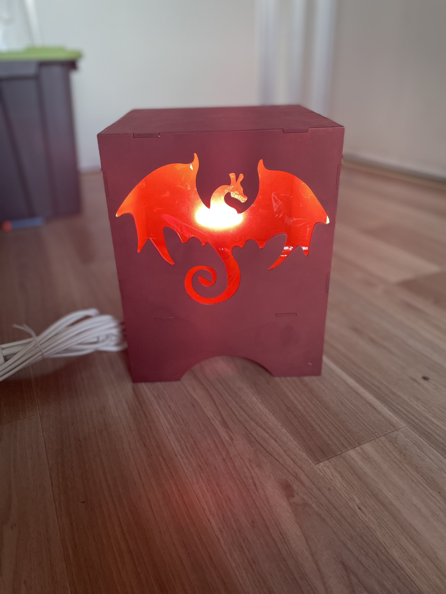
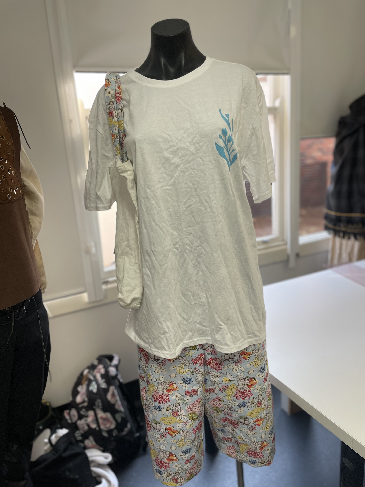
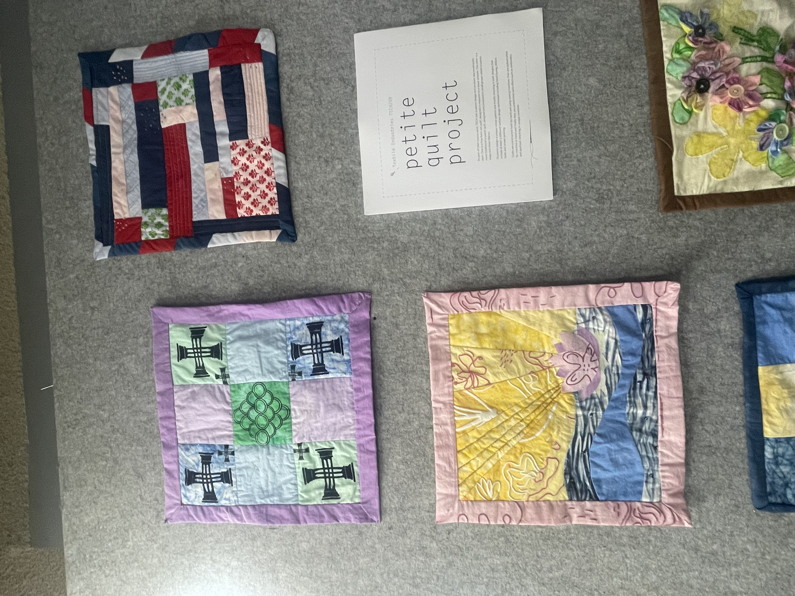
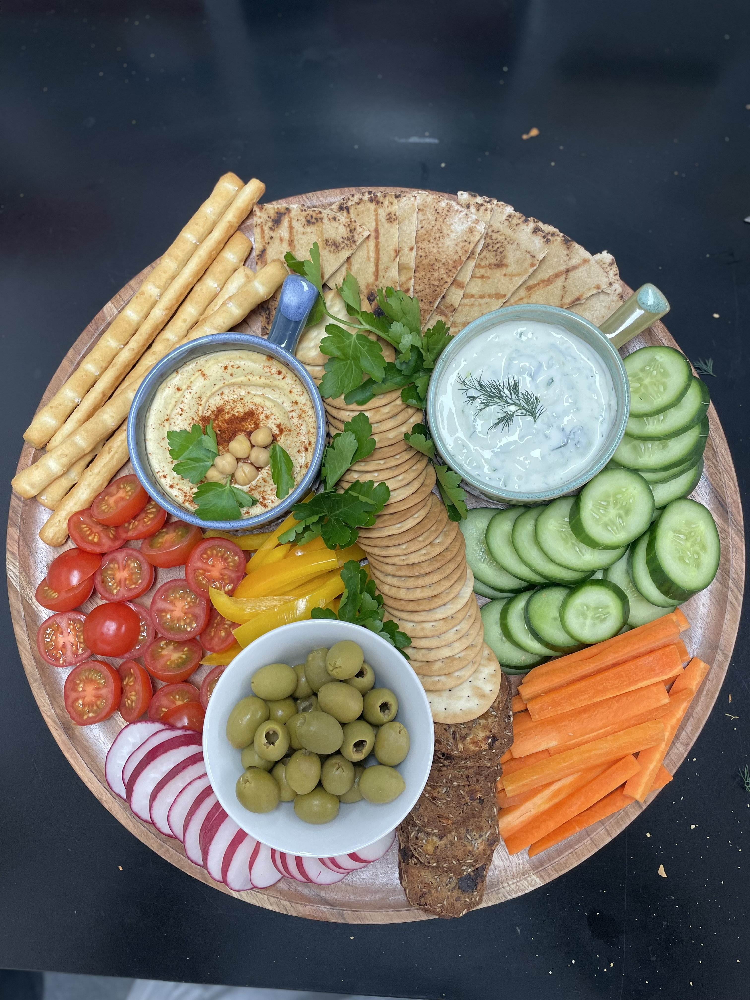
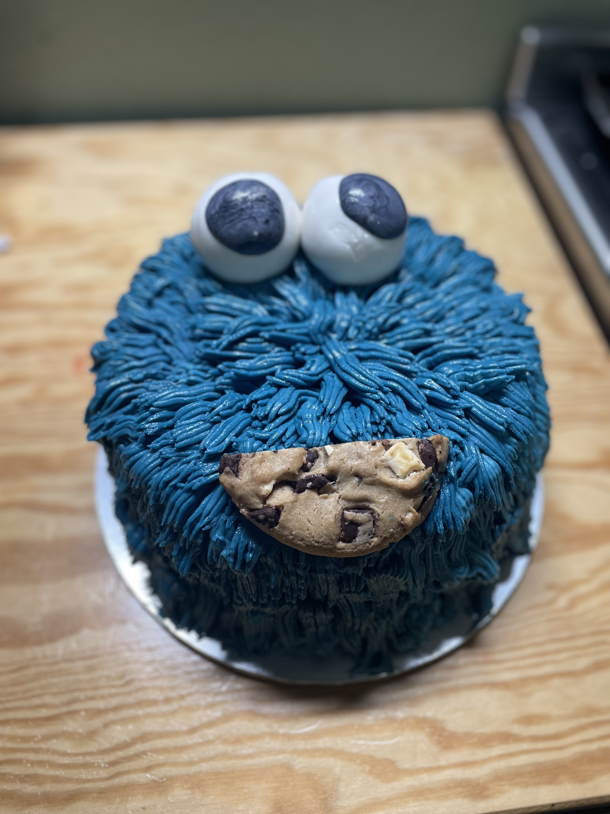

Stage 4 Technology Mandatory Unit
Year 7 Textiles making felt banners and learning basic hand sewing techiques.

Stage 4 Technology Mandatory Unit
Year 8 had to make a light using laser cutting skills. This one shows a box that has been created with a cut out image of a dragon.

Stage 5 Textiles Unit
Year 9 designed and made their own pjs and tote bag. Using skills such as screen printing to design their shirts.

Stage 5 Textiles Unit
Year 9 designed and created art quilts. They used a variety of skills to dye their fabric, design their quilt and make it. Their final products were hung in the library for community and school vewing.

Stage 6 Food Technology Unit
Year 11 designed and produce their own sharing platter. Exploring different skills to be able to produce a colourful and organised design.

Stage 6 Food Technology Unit
Year 12 were tasked with creating a birthday cake. This one was inspired by Cookie Monster from Seaseme Street.